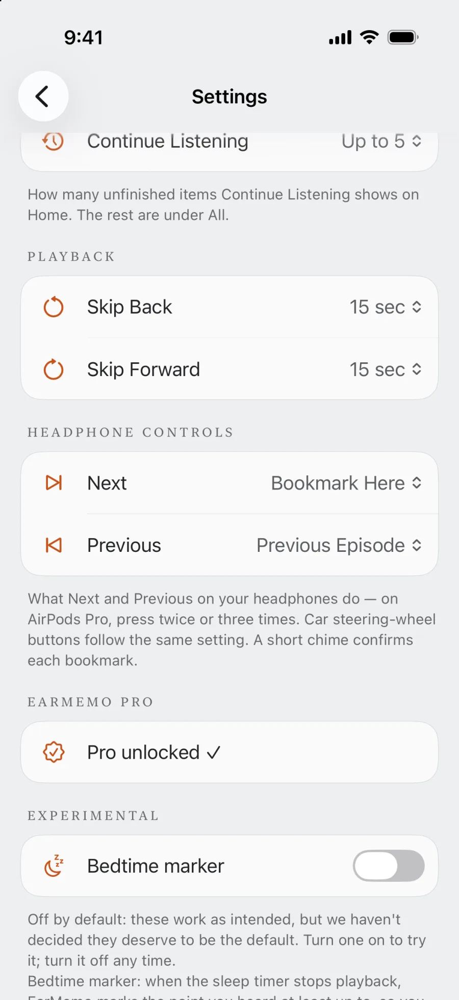

EarMemo › Open Yale Courses offline
How to listen to Open Yale Courses offline on iPhone
Each lecture page on oyc.yale.edu has an Audio tab with an mp3 link. On iPhone, touch and hold that link and choose Download Linked File; it saves to Files → Downloads. For a whole course, download on a computer and send the folder over Wi-Fi, so the lectures stay together as one album in an offline player.
Open Yale Courses publishes complete introductory Yale courses — every lecture recorded, with transcripts — under a Creative Commons license. There is no per-course download-all button, so the work is fetching one MP3 per lecture and keeping them in order.
Download a lecture
- Open the course and a lecture on oyc.yale.edu (Courses → the course → a lecture in the Sessions list).
- Tap the Audio tab under the video. It has a link labelled mp3.
- Save the file. On iPhone, tapping a direct .mp3 link just plays it in Safari. To save the file, touch and hold the link and choose Download Linked File.
- Find it in Files → Downloads. Safari saves downloads to Files → Downloads. That folder is in iCloud Drive unless you changed it under Settings → Safari → Downloads (Settings → Apps → Safari on iOS 18 and later); choose On My iPhone if you want files to stay off iCloud.
A whole course at once
On a computer, open each lecture's Audio tab and right-click (or Control-click) the mp3 link → Save Link As… into one folder named after the course. The files are named by course and lecture number (for example plsc114_01_….mp3), so they sort in order. Then send the folder over Wi-Fi as below; it arrives as one album with the lectures in sequence.
Import the files into EarMemo
- From Files. In EarMemo, tap ⋯ → Import Audio / Video, open Downloads, and select the files (tap Select to pick several). Choose Import Folder instead when you have a whole folder. A course folder becomes one album, sorted by file name.
- Or from a computer over Wi-Fi. For a big batch, download on the computer, then in EarMemo tap ⋯ → Wi-Fi Transfer, open the address it shows in any desktop browser on the same network, and drag the folder onto the page. The transfer stays on your local network. All four transfer routes.

Listen: speed, resume, and marks from your headphones
- Speed from 0.5× to 3.5×, pitch kept, for lectures recorded at classroom pace.
- It remembers the exact second in every file, so you can leave one file, play another, and come back to where you stopped.
- Mark a moment without touching the phone. In Settings → Headphone Controls, set Next to Bookmark Here. On AirPods Pro, press twice; a short chime confirms the mark. Add a sentence later, and tap the mark to hear that passage again.
- A sleep timer with a countdown on the Lock Screen, for listening in bed.

The license, briefly
Open Yale Courses content is licensed under Creative Commons Attribution-NonCommercial-ShareAlike 3.0 (US). Personal listening is fine; the terms list exceptions for third-party material credited in a lecture, and commercial reuse is not allowed.
Official pages used for this guide
When EarMemo is the wrong choice
- You need the blackboard. Some courses lean on diagrams and equations; audio alone loses them.
- You want all 20-plus lectures of a course free. EarMemo's free version lets you try 10 different tracks in total; a full course needs Pro (one-time purchase).
- You prefer to stream. The lecture page plays the video and audio in the browser without any download.
Questions people actually ask
Can I download Open Yale Courses lectures as MP3?
Yes. Every lecture page has an Audio tab with an mp3 link. On iPhone, touch and hold it and choose Download Linked File; on a computer, use Save Link As.
Is there a way to download a whole Open Yale course at once?
Not from the site; there is no download-all button. Save each lecture's mp3 into one folder on a computer, then transfer the folder to EarMemo over Wi-Fi so it becomes one album.
Can I legally keep the files?
Open Yale Courses uses a Creative Commons BY-NC-SA 3.0 license, which allows non-commercial copying and sharing with attribution. Check the credits of a lecture for third-party material, which the license does not cover.
Why does tapping the mp3 link only play it?
iPhone Safari plays direct audio links in place. Touch and hold the link and choose Download Linked File to save it instead.
Is EarMemo free for this?
Free to download, and the free allowance never expires: you can listen to one album at a time, try 10 different audio tracks in total, add unlimited timestamp markers, and write text on 5 of them. Importing, resume, speed and the sleep timer are free. A long series needs EarMemo Pro, a single one-time purchase with no subscription.
Try it with your own files
EarMemo is free to download and free to keep using within its quota. EarMemo Pro is a single one-time purchase — no subscription, no ads, no account.